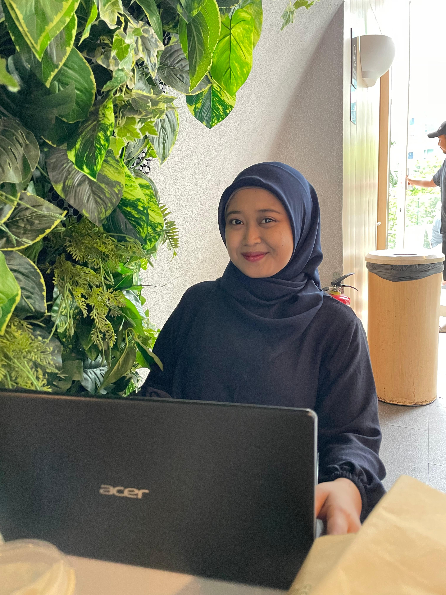

Cooperative Finance Website
Developed a website to support transparent financial reporting and information management for a cooperative.
Explore ProjectHELLO, I'M
Informatics Engineering Graduate
I am an Informatics Engineering graduate interested in technology, data, and system development. I am eager to keep learning, grow professionally, and contribute to a collaborative work environment.
Explore Projects
PROJECTS & EXPERIENCE
A selection of academic projects and practical experience from my learning journey.
Developed a website to support transparent financial reporting and information management for a cooperative.
Explore ProjectBuilt a medicine search system using N-Gram and Cosine Similarity to match symptoms with medicine uses.
Explore ProjectAnalyzed Google Maps reviews of Gus Dur's Tomb using TF-IDF, SMOTE, and Naive Bayes to classify visitor sentiment.
Explore ProjectMY JOURNEY
Internship and work experience, with a dedicated page for role details and documentation.
Managed warehouse data, recorded warehouse cash flow, and supported stock opname activities.
View DetailsSupported the development of a cooperative website and helped organize information and database features.
View DetailsPerformed PC and laptop troubleshooting, hardware repairs, Windows installation, and LAN cable crimping to support computer and network operations.
View DetailsPerformed network troubleshooting, assisted with network infrastructure installation, configured LAN connections, and installed Windows operating systems to support office IT operations.
View DetailsLET'S CONNECT
I would be happy to connect, learn, and explore how I can contribute to your team.